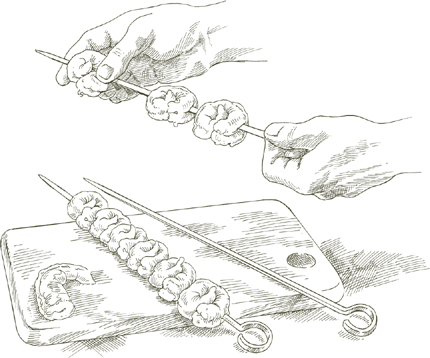
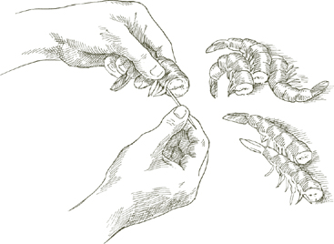

ДАВНО моя родная область Романия, на северном адриатическом побережье, стала известна своими пляжными городками и дискотеками, прежде всего славилась своей рыбой. Рыбаки Романии непревзойденны в искусстве гриля. Их секрет, помимо свежести улова, заключается в том, чтобы настаивать рыбу в маринаде из оливкового масла, лимонного сока, соли, перца, розмарина и панировочных сухарей в течение часа или более перед запеканием. Этот метод хорошо работает со всеми видами рыбы, подчеркивая ее естественный морской вкус и предотвращая высыхание мяса на огне.
На 4 или более порции
2½–3 фунта (1100–1350 г) целой рыбы, потрошеной и очищенной, ИЛИ стейки рыбы
Соль
Черный перец, свежемолотый
¼ чашки (60 мл) оливкового масла первого холодного отжима
2 столовые ложки (30 мл) свежевыжатого лимонного сока
Небольшая веточка свежего розмарина ИЛИ ½ чайной ложки сушеных листьев, очень мелко нарезанных
⅓ чашки (40 г) мелких, сухих, безвкусных панировочных сухарей
ПО ЖЕЛАНИЮ: угольный или дровяной гриль
ПО ЖЕЛАНИЮ: небольшая веточка свежих лавровых листьев или несколько сушеных листьев
1. Промойте рыбу или рыбные стейки в холодной воде, затем тщательно обсушите бумажными полотенцами.
2. Щедро посыпьте рыбу солью и перцем с обеих сторон, положите на большое блюдо и добавьте оливковое масло, лимонный сок и розмарин. Переверните рыбу два или три раза, чтобы хорошо покрыть ее. Добавьте панировочные сухари, перевернув рыбу еще раз или два, пока она не будет равномерно покрыта маслом и панировочными сухарями. Маринуйте в течение 1–2 часов при комнатной температуре, время от времени переворачивая и поливая рыбу маринадом.
3. Если используете уголь или древесину, разожгите уголь так, чтобы он образовал белую золу перед готовкой, или древесину заранее, чтобы она превратилась в горячие угли. Если используете газовый или электрический гриль, разогрейте его не менее 15 минут перед тем, как будете готовы готовить.
4. Поместите рыбу на расстоянии 10–12 см от источника тепла. Не выбрасывайте маринад. Если готовите на углях или с древесиной, бросьте лавровые листья в огонь, в противном случае пропустите. Готовьте с обеих сторон до готовности, перевернув рыбу один раз. В зависимости от толщины рыбы стейков или размера целой рыбы, это может занять от 5 до 15 минут. Во время готовки поливайте верх маринадом. Подавайте горячим с гриля.
ГДЕ БЫ В МИРЕ вы ни находились, когда готовите рыбу в стиле салмори́льо, вам может показаться, что вы вдыхаете резкий летний воздух Средиземноморья. Оливковое масло, лимонный сок и орегано создают обворожительно ароматную смесь, которую наносят на дымящуюся горячую рыбу в тот момент, когда она поднимается с гриля. Выбор рыбы — меч-рыба, как это было бы на восточном побережье Сицилии, но другие стейковые рыбы, такие как тунец, палтус, акула мако или рыба тайл, также являются приемлемыми альтернативами. Сицилийская практика использования довольно тонких ломтиков идеальна, так как позволяет держать рыбу на гриле такое короткое время, что она не успевает высохнуть.
На 4–6 порций
ПО ЖЕЛАНИЮ: угольный гриль
Соль
2 столовые ложки свежевыжатого лимонного сока
2 чайные ложки нарезанного свежего орегано ИЛИ 1 чайная ложка сушеного
¼ чашки оливкового масла первого холодного отжима
Черный перец, свежемолотый
2 фунта (900 г) свежей меч-рыбы ИЛИ других рыбных стейков, нарезанных не толще 1.25 см
1. Если используете уголь, разожгите его так, чтобы он образовал белую золу перед готовкой. Если используете газовый или электрический гриль, разогрейте его не менее 15 минут перед тем, как будете готовы готовить.
2. Положите щедрое количество соли, около 1 столовой ложки (15 мл), в небольшую миску, добавьте лимонный сок и взбейте вилкой, пока соль не растворится. Добавьте орегано, перемешивая вилкой. Постепенно добавляйте оливковое масло, капля за каплей, взбивая его вилкой, чтобы смешать с лимонным соком. Добавьте несколько щепоток перца, помешивая для равномерного распределения.
3. Когда гриль или угли будут готовы, разместите рыбу близко к источнику тепла, чтобы она готовилась быстро на высоком огне. Готовьте ее около 2 минут с одной стороны, затем переверните и готовьте другую сторону 1½–2 минуты. Поверхность не должна подрумяниваться.
4. Переложите рыбу на большое теплое блюдо для подачи. Проколите каждый стейк вилкой в нескольких местах, чтобы соус проник глубже. Используйте ложку, чтобы взбить и одновременно полить смесью salmoriglio из масла и лимонного сока рыбу, равномерно распределяя по всей поверхности. Подавайте сразу, поливая немного соуса с блюда на каждую порцию.
Примечание  Свежесть имеет решающее значение для аромата соуса salmoriglio. Не готовьте его заранее. Это так просто и быстро, что вы можете сделать это, пока гриль разогревается.
Свежесть имеет решающее значение для аромата соуса salmoriglio. Не готовьте его заранее. Это так просто и быстро, что вы можете сделать это, пока гриль разогревается.
ТАКОГО способа, который бы давал такие сочные креветки на гриле, я никогда не встречала. Обсыпка из хлебных крошек, пропитанных оливковым маслом, делает свое дело. При приготовлении имейте в виду, что масла должно быть достаточно, чтобы покрыть креветки, но не так много, чтобы их залить, достаточно хлебных крошек, чтобы впитать масло и не дать ему стекать, но не так много, чтобы обсыпать их и образовать толстую корочку.
На 4–6 порций
2 фунта (900 г) креветок среднего размера, в неочищенном виде
3½ столовые ложки (52.5 мл) оливкового масла первого холодного отжима
3½ столовые ложки (52.5 мл) оливкового масла
⅔ чашки (80 г) мелких, сухих, безвкусных хлебных крошек
½ чайной ложки (2.5 г) чеснока, очень мелко нарезанного
2 чайные ложки (10 г) петрушки, очень мелко нарезанной
Соль
Черный перец, свежемолотый
Шампуры
ПО ЖЕЛАНИЮ: угольный гриль
1. Очистите креветки и удалите их темную вену. Промойте в холодной воде и тщательно обсушите кухонным полотенцем.
2. Положите креветки в просторную миску. Добавьте столько оливкового и растительного масла в равных частях и панировочных сухарей, сколько необходимо, чтобы равномерно, но слегка покрыть креветки. Возможно, вам не потребуется все масло, указанное в списке ингредиентов, но если у вас много очень маленьких креветок, вам может понадобиться даже больше. Когда вы увеличиваете количество, используйте оливковое и растительное масло в равных частях.
3. Добавьте нарезанный чеснок, петрушку, соль и перец, и тщательно перемешайте, чтобы хорошо покрыть креветки. Дайте им настояться в панировке минимум 20–30 минут, или до 2 часов, при комнатной температуре.
4. Разогрейте гриль как минимум за 15 минут до начала приготовления, или разожгите угли заранее, чтобы они покрылись белым пеплом перед готовкой.
5. Нанизайте креветки плотно, закручивая один конец каждой креветки внутрь, чтобы шампур проходил через три точки, предотвращая скольжение креветок при повороте шампура на гриле.
6. Готовьте креветки недолго, близко к источнику тепла. В зависимости от их размера и интенсивности огня, около 2 минут с одной стороны и 1½ с другой, только до образования тонкой золотистой корочки. Подавайте горячими.

Креветки, похожие на креветок, с широким плоским телом и клешнями, похожими на мантии, которые итальянцы называют каннокки, встречаются в Адриатическом море и нигде больше в Западном полушарии, насколько мне известно. (Близкий вид ловят у побережья Японии, где его называют шако.) Исключительно нежное, сладкое и соленое мясо не похоже ни на одно другое морепродукт. Рестораны в Венеции подают каннокки на пару, очищенными и заправленными оливковым маслом и лимонным соком. Название блюда, каннокки с оливковым маслом и лимоном, это то, что каждый посетитель Венеции, который заботится о хорошем питании, должен запомнить до прибытия.
Способ, которым рыбаки моего города готовят каннокки, редко встречается в меню ресторанов. Они разрезают спину раковины по всей длине, маринуют креветки в оливковом масле, панировочных сухарях, соли и щедром количестве черного перца, и жарят их на очень горячих углях или древесных углях. Но как их готовят — это лишь половина истории, важно, как их есть. Вы берете одну рукой, открываете раковину губами и сосете мясо. В Романьи мы называем это есть col bacio, с поцелуем. И это самый вкусный поцелуй, когда вы облизываете с раковины перченую корочку масляных крошек, обогащенную поджаренным вкусом самой раковины.
Креветки в этом рецепте приготовлены в манере каннокки и должны быть съедены в том же стиле, вызывающем слюноотделение. Рекомендуется подавать с достаточным количеством бумажных салфеток.
На 4–6 порций
2 фунта (900 г) средних и крупных очищенных креветок
Круглые деревянные зубочистки
1 чашка (240 мл) панировочных сухарей без вкуса
Соль
⅓ чашки (80 мл) оливкового масла первого холодного отжима
Черный перец, свежемолотый
ПО ЖЕЛАНИЮ: угольный или дровяной гриль
1. Промойте неочищенные креветки в холодной воде, затем тщательно обсушите их кухонными полотенцами.
2. С помощью ножниц разрежьте панцирь каждой креветки вдоль спины на всю длину до хвоста. Вставьте зубочистку в каждую креветку, помещая ее между мясом брюшка и панцирем. Это нужно, чтобы выпрямить креветку и предотвратить ее скручивание во время приготовления, чтобы в итоге она напоминала cannocchie.

3. Когда все креветки будут подготовлены, положите их в миску и добавьте все остальные ингредиенты. Будьте щедры с солью и перцем. Переверните креветки, чтобы они полностью покрылись маринадом, заставляя немного маринада попасть под панцирь в месте разреза. Дайте настояться при комнатной температуре не менее ½ часа, или до 2 часов, периодически переворачивая.
4. Если вы используете уголь или дрова, разожгите уголь так, чтобы он покрылся белой золью перед приготовлением, или дрова заранее, чтобы они превратились в горячие угли. Если вы используете газовый или электрический гриль, разогрейте его как минимум за 15 минут до начала приготовления.
5. Если вы используете уголь или дрова, поместите креветки в двойной гриль с петлей и плотно закройте гриль. Если вы используете внутренний гриль, разместите их на решетке гриля. Готовьте очень близко к источнику тепла, около 2 минут с одной стороны и 1½ минуты с другой, или немного дольше, если креветки очень толстые. Когда они будут готовы, подавайте немедленно, с большим количеством бумажных салфеток.
Существует множество видов жареного теста, каждое из которых подходит для своей цели. Для тонкой корочки, похожей на яичную скорлупу, с непревзойденной хрусткостью попробуйте тесто из муки и воды. Для хрустящей корочки, которая также легкая и воздушная, попробуйте тесто с дрожжами, приведенное ниже. Оно является любимым у поваров от Рима до Палермо, которые используют его для жарки мелких моллюсков и овощей.
Нанизывание каждой креветки, или 2 одновременно, если они очень маленькие, на зубочистку, как описано в рецепте, не является абсолютно необходимым, но имеет свои преимущества. Если вы используете крошечные креветки, которые будут наиболее желательными для этого блюда, это предотвращает их слипание в комки по две или три во время жарки и позволяет им сохранять четкую и привлекательную форму. И очень удобно иметь один конец зубочистки, чтобы держаться за него при погружении креветок в тесто.
На 4 порции
1 фунт (450 г) неочищенных креветок, как можно меньше
ПО ЖЕЛАНИЮ: круглые деревянные зубочистки
2 яйца
Соль
½ упаковки активных сухих дрожжей (около 1¼ чайной ложки), растворенных в 1 чашке теплой воды
1 чашка муки
Оливковое масло для жарки
1. Очистите креветки и удалите их темную вену. Промойте в нескольких сменах холодной воды и тщательно обсушите кухонным полотенцем.
2. ПО ЖЕЛАНИЮ: Согните каждую креветку по ее естественному изгибу, заставив голову и хвост встретиться и слегка перекрыться. Проткните ее зубочисткой, удерживая хвост и голову на месте.
3. Разбейте оба яйца в миску, добавьте крупную щепотку соли и хорошо взбейте их вилкой. Добавьте растворенные дрожжи, затем добавьте муку, просеивая ее через сито, одновременно постоянно взбивая смесь вилкой.
4. Налейте достаточно масла в сковороду, чтобы оно поднялось на ¼ дюйма (0.6 см) по бокам, и включите сильный огонь. Чтобы определить, когда масло достаточно горячее для жарки, капните каплю теста в масло: если она затвердеет и мгновенно всплывет на поверхность, масло готово.
5. Обмакните креветку в тесто, позволяя излишкам стекать обратно в миску, и положите ее в сковороду. Не кладите больше креветок за один раз, чем может вместить сковорода, не переполняя ее. Как только на одной стороне креветки образуется богатая золотистая корочка, переверните ее и обжарьте с другой стороны. С помощью шумовки или лопатки перенесите обжаренные креветки на решетку для охлаждения, чтобы стечь, или положите на тарелку, выстланную бумажными полотенцами.
6. Перемешайте тесто вилкой, обмакните еще креветок и повторите описанную выше процедуру, пока все креветки не будут готовы. Посыпьте солью и подавайте немедленно.
ЗДЕСЬ У НАС отличный сицилийский метод, который можно использовать при работе с рыбой, которая имеет тенденцию пересыхать. Рыба замачивается на около 1 часа в маринаде из оливкового масла и лимонного сока, а затем жарится. Приготовление проходит очень быстро, потому что рыба нарезана тонкими ломтиками и нарезана на кусочки размером с укус. Когда она выходит из сковороды, она почти такая же влажная и нежная, как когда вышла из моря.
На 4 порции
2 фунта (900 г) свежей меч-рыбы ИЛИ других рыбных стейков, нарезанных толщиной ½ дюйма (1.25 см)
Соль
Черный перец, свежемолотый
⅓ чашки (80 мл) оливкового масла первого холодного отжима
3 столовые ложки (45 мл) петрушки, очень мелко нарезанной
¼ чашки (60 мл) свежевыжатого лимонного сока
2 яйца
Оливковое масло для жарки
1 чашка муки, выложенной на тарелку
1. Нарежьте стейки рыбы на куски размером примерно 5 на 7.5 см.
2. В большую миску или глубокую тарелку положите щедрое количество соли и перца, добавьте оливковое масло, петрушку и лимонный сок, и взбейте все вилкой до однородного состояния. Положите рыбу, переворачивая куски несколько раз в смеси масла и лимонного сока, чтобы хорошо их покрыть. Дайте рыбе мариноваться не менее 1 часа, но не более 2, при комнатной температуре, время от времени переворачивая.
3. Достаньте рыбу из маринада и тщательно обсушите куски бумажными полотенцами.
4. Вбейте яйца в глубокую тарелку, взбивая их вилкой до объединения желтков и белков.
5. Налейте в сковороду достаточно оливкового масла, чтобы оно поднялось на 0.5–1.5 см по бокам, и включите сильный огонь.
6. Пока масло нагревается, обмакните несколько кусочков рыбы в взбитые яйца. Поднимите один из кусочков, дайте излишкам яйца стечь обратно в тарелку и обваляйте кусок с обеих сторон в муке. Держите кусок за один конец кончиками пальцев, окуните уголок в сковороду. Если масло вокруг него сразу начнет пузыриться, оно достаточно горячее, и вы можете опустить весь кусок. Обваляйте в муке еще рыбы, покрытой яйцом, и добавьте в сковороду, но не переполняйте ее.
7. Когда на рыбе образуется легкая золотистая корочка с одной стороны, переверните ее. Когда корочка образуется с другой стороны, перенесите рыбу, используя шумовку или лопатку, на решетку для остывания, или положите на большую тарелку, выстланную бумажными полотенцами. Когда в сковороде появится место, добавьте еще рыбы. Когда все будет готово, посыпьте солью и подавайте немедленно.
ЗДЕСЬ РЫБА готовится тем же способом, что и для приготовления жаркого из телятины в Италии, и по тем же причинам. Медленное приготовление в закрытой сковороде сохраняет мясо нежным и сочным, а его вкус подчеркивается ароматом розмарина и чеснока.
На 4 порции
4 маленькие скумбрии, примерно по 340 г каждая, потрошеные и очищенные, но с головами и хвостами
⅓ чашки оливкового масла первого холодного отжима
4 зубчика чеснока, очищенных
Небольшая веточка розмарина ИЛИ 1 чайная ложка сушеных листьев, крошеных
Соль
Черный перец, свежемолотый
Свежевыжатый сок ½ лимона
1. Промойте рыбу под холодной проточной водой, затем тщательно обсушите бумажными полотенцами. Сделайте 3 параллельных диагональных надреза с обеих сторон каждой рыбы, не углубляясь глубже кожи.
2. Положите оливковое масло и чеснок в овальную жаровню, если у вас есть такая, или в сковороду или другую кастрюлю, где рыба может разместиться рядом. Включите средний огонь и готовьте чеснок, пока он не станет светло-золотистым. Положите рыбу и розмарин. Хорошо обжарьте рыбу с обеих сторон. Постоянно поддевайте ее металлическим шпателем, чтобы она не прилипла, и аккуратно переворачивайте, чтобы она не развалилась. Посолите и поперчите с обеих сторон.
3. Добавьте лимонный сок, накройте плотно крышкой, уменьшите огонь до минимума и готовьте около 10–12 минут, пока мясо не станет мягким при прокалывании вилкой. Подавайте сразу, как будет готово.
РЫБА И ГРИБЫ в Италии имеют крепкую общую связь — это чеснок и оливковое масло, с которыми их обычно готовят. Рыба и грибы прекрасно сочетаются в этом рецепте, но готовятся они полностью независимо, и если вы хотите исключить грибы, рыба отлично подойдет и без них.
На 4 порции
ДЛЯ ГРИБОВ
½ фунта (225 г) свежих, крепких белых грибов, приготовленных как описано, с 2 столовыми ложками оливкового масла первого холодного отжима, 1 чайной ложкой нарезанного чеснока, 2 чайными ложками нарезанной петрушки и солью
ДЛЯ РЫБЫ
Целая рыба весом 2–2½ фунта (900–1150 г), такая как снэппер или морской басс, потрошеная и очищенная, но с головой и хвостом
1 крупный или 2 мелких зубчика чеснока
2 столовые ложки оливкового масла первого холодного отжима
2 столовые ложки лука, мелко нарезанного
2 столовые ложки нарезанной моркови
2 чайные ложки нарезанной петрушки
1 свежий лавровый лист ИЛИ
½ сушеного, мелко крошеного
⅓ чашки сухого белого вина
1 плоская филе анчоуса, мелко нарезанная до состояния пасты
Соль
Черный перец, свежемолотый
1. Промойте очищенную и выпотрошенную рыбу под холодной проточной водой, затем тщательно обсушите бумажными полотенцами.
2. Легко раздавите чеснок тяжелой ручкой ножа, достаточно, чтобы треснула его шкурка и его можно было очистить.
3. Выберите сковороду, достаточно большую, чтобы позже разместить в ней рыбу, добавьте оливковое масло и лук, и включите средний огонь. Готовьте лук, помешивая, пока он не станет прозрачным, добавьте нарезанную морковь и готовьте около 2 минут, тщательно помешивая, чтобы хорошо ее покрыть. Добавьте чеснок и готовьте, помешивая, пока он не станет слегка золотистым. Добавьте петрушку, тщательно перемешайте один-два раза, затем положите лавровый лист, вино и анчоус. Готовьте, часто помешивая, разминая анчоуса о стенки сковороды задней частью деревянной ложки, пока вино не выпарится наполовину.
4. Положите рыбу, приправьте как рыбу, так и овощи солью и перцем, и накройте сковороду, оставив крышку слегка приоткрытой. Готовьте около 8 минут, в зависимости от толщины рыбы, аккуратно переверните ее, используя два лопатки или большую вилку и ложку, чтобы она не развалилась, посыпая солью и перцем с той стороны, которую вы только что перевернули. Готовьте еще 5 минут, всегда с крышкой приоткрытой, затем добавьте по желанию грибы. Накройте сковороду и дайте рыбе и грибам готовиться вместе не более минуты. Подавайте сразу.

На 4 порции
1. Промойте рыбу в холодной воде, внутри и снаружи. Если используете филе рыбы, разделите его на две половины, удалите кости, но оставьте кожу.
2. Отрежьте верхушки финока до луковиц и выбросьте их. Удалите любые поврежденные, обесцвеченные части луковиц. Нарежьте луковицы вдоль тонкими ломтиками толщиной менее ½ дюйма (1.25 см). Замочите их в холодной воде на несколько минут и промойте.
3. Выберите сковороду для пассерования, которая сможет вместить всю рыбу. Вылейте оливковое масло, добавьте нарезанный финок, соль, около ½ чашки воды и включите средний огонь. Накройте сковороду и готовьте в течение 30 минут или более, в зависимости от свежести финока, пока он полностью не увянет и не станет очень мягким. Если через 20 минут финок все еще кажется твердым при нажатии вилкой, добавьте ¼ чашки воды.
4. Когда финок станет мягким, снимите крышку сковороды и увеличьте огонь, чтобы полностью выпарить оставшуюся жидкость. Часто переворачивайте ломтики финока, пока они не станут золотистыми с обеих сторон. Добавьте несколько щепоток перца, уменьшите огонь до среднего и отодвиньте финок в сторону, чтобы освободить место для рыбы в сковороде.
5. Положите рыбу, кожей вниз, если используете филе, посыпьте щедро солью и молотым перцем, и полейте немного масла из сковороды сверху. Накройте и готовьте в течение 6–7 минут. Затем аккуратно переверните рыбу, снова полейте оливковым маслом, накройте и готовьте еще 5 минут или около того, в зависимости от толщины рыбы.
6. Переложите рыбу на тарелку и вылейте все содержимое сковороды на нее. Если используете целую рыбу, вы можете предпочесть разделать ее на филе перед тем, как положить на сервировочную тарелку. Это несложно: разделите рыбу на две половины вдоль, удалите кости, используйте ложку, чтобы отделить голову и хвост, и все готово. Не забудьте укрыть всеми ломтиками финока и соками из сковороды.
ПРИГОТЕВАНИЕ НА СКОВОРОДЕ — метод, который не является ни пассерованием, ни тушением, а чем-то средним, — это одна из основных техник итальянской кухни для приготовления рыбы, а также мяса, курицы и мелких птиц. Это более контролируемое приготовление, чем запекание в духовке, объединяющее медленное концентрирование вкуса, которое происходит в сухом воздухе духовки, с сочностью и превосходной текстурой, которую можно достичь на плите.
Рецепт ниже наиболее успешен с мелкой, целой рыбой, но также можно использовать плотные, толстые филе с кожей.
На 4–6 порций
4 мелкие или 3 средние целые рыбы, такие как порги, бас, помпано, весом около ¾–1 фунта (340–450 г) каждая, очищенные и потрошеные, но с головой и хвостом
3 зубчика чеснока
3 столовые ложки сливочного масла
2 столовые ложки оливкового масла
1 чашка муки, распределенной на тарелке
1 чайная ложка свежих листьев майорана ИЛИ ½ чайной ложки сушеного
Соль
Черный перец, свежемолотый
1 столовая ложка свежевыжатого лимонного сока
1. Вымойте рыбу внутри и снаружи в холодной воде, затем тщательно обсушите бумажными полотенцами.
2. Легко разомните чеснок тяжелой ручкой ножа, достаточно сильно, чтобы треснуть кожура, и очистите его.
3. Выберите сковороду с крышкой или глубокую сковороду, которая сможет вместить всю рыбу без наложения. Положите в сковороду сливочное масло и оливковое масло и включите средний огонь.
4. Когда сливочное масло и оливковое масло хорошо нагреются, обваляйте рыбу в муке с обеих сторон и положите в сковороду вместе с чесноком и майораном. Если используете толстые филе, сначала положите их кожей вниз.
5. Обжаривайте рыбу около 1½ минут с каждой стороны. Добавьте щедрые щепотки соли, черного перца и лимонного сока, накройте сковороду крышкой и уменьшите огонь до среднего. Готовьте около 10 минут, в зависимости от толщины рыбы, перевернув рыбу через 6 минут.
6. Переложите на теплую сервировочную тарелку, аккуратно поднимая рыбу двумя металлическими лопатками, чтобы она не развалилась, полейте все соки из сковороды сверху и подавайте немедленно.

На 4 порции
2 фунта (900 г) палтуса ИЛИ других рыбных стейков толщиной 1 дюйм (2.5 см)
½ чашки оливкового масла первого холодного отжима
⅔ чашки муки, распределенной на тарелке
1½ чашки мелко нарезанного лука
3 столовые ложки нарезанной петрушки
Соль
⅔ чашки сухого белого вина
1 или 2 плоских филе анчоусов (предпочтительно приготовленных дома как описано), измельченных в пасту
Черный перец, свежемолотый
1. Промойте рыбные стейки в холодной воде, затем тщательно обсушите их бумажными полотенцами. Не рвите и не удаляйте кожу, которая их окружает.
2. Выберите сковороду для обжаривания, которая сможет вместить всю рыбу без наложения. Влейте половину оливкового масла и включите средний огонь.
3. Обваляйте рыбу в муке с обеих сторон. Когда масло нагреется, аккуратно положите стейки в сковороду и готовьте их около 5 минут с одной стороны и 4 минуты или меньше с другой. Снимите с огня и слейте большую часть масла из сковороды.
4. В маленькую кастрюлю влейте оставшиеся ¼ чашки масла и добавьте нарезанный лук, включите средний огонь и готовьте лук, помешивая, пока он не станет очень светло-золотистым. Добавьте нарезанную петрушку и щепотку соли, быстро перемешайте один-два раза, затем добавьте вино и анчоусы. Готовьте, постоянно помешивая деревянной ложкой, время от времени прижимая анчоусы к стенке кастрюли.
5. Когда большая часть вина испарится, вылейте содержимое кастрюли на рыбу в сковороде. Добавьте немного перца. Включите средний огонь и готовьте около 2 минут, поливая соусом рыбу один-два раза.
6. Поднимите стейки с помощью широкой лопатки или, возможно, двух, по одной в каждой руке, аккуратно перенесите их на теплую сервировочную тарелку, следя за тем, чтобы они не развалились. Вылейте все содержимое сковороды на рыбу и подавайте немедленно.

В СИРАКУЗЕ, Сицилия, это ароматное блюдо в основном готовят из меч-рыбы и иногда из свежего тунца. Когда много лет назад я начала работать с ним, я искала другую рыбу, которая в то время была более доступна за пределами Сицилии и могла бы подойти для этого вкусного стимпирата. Самым успешным заменителем оказалась рыба, которая была совершенно не похожа на оригинальные сицилийские сорта, лосось. Если задуматься, не стоит удивляться, ведь ни одна другая рыба не обладает такой способностью, как лосось, справляться с разнообразием вкусов в своих соусах, от самых скромных до самых ярких.
Для этого рецепта, если вы решите использовать лосось, вы можете взять как тонкие стейки, так и филе. Меч-рыба, тунец или другие рыбы, такие как акула, групер, рыба-черепаха или красный снэппер должны быть в форме стейков, нарезанных очень тонко.
На 4–6 порций
3 столовые ложки оливкового масла первого холодного отжима
¼ чашки лука, нарезанного очень тонко
6 столовых ложек сельдерея, нарезанного очень мелко
2 столовые ложки каперсов, замоченных и промытых как описано, если упакованы в соль, слить, если в уксусе
Оливковое масло для пассерования рыбы
2 фунта (900 г) рыбы меч, лосося или других рыбных стейков (см. рекомендации выше), нарезанных толщиной ½ дюйма (1.25 см), ИЛИ филе лосося
⅔ чашки муки, выложенной на тарелку
Соль
Черный перец, свежемолотый
¼ чашки качественного винного уксуса, предпочтительно белого
1. Положите 3 столовые ложки оливкового масла в сковороду и включите средний огонь. Готовьте и помешивайте лук, пока он не станет светло-золотистым, затем добавьте нарезанный сельдерей. Готовьте, помешивая время от времени, пока сельдерей не станет мягким, 5 минут или более. Добавьте каперсы и готовьте около полминуты, постоянно помешивая. Выключите огонь.
2. Налейте в сковороду достаточно оливкового масла, чтобы оно поднялось на ½ дюйма (1.25 см) по бокам, и включите средне-высокий огонь. Когда масло нагреется, обваляйте рыбу с обеих сторон в муке и положите в сковороду. Не перегружайте сковороду рыбой, которая не помещается удобно без наложения. Готовьте рыбу недолго, около 1 минуты с каждой стороны или немного дольше, если толще ½ дюйма (1.25 см), затем перенесите на тарелку, используя шумовку или лопатку. Когда вся рыба будет готова, добавьте соль и несколько щепоток перца.
3. Включите средний огонь под сковородой с сельдереем и каперсами. Когда содержимое сковороды начнет кипеть, добавьте обжаренную рыбу с тарелки, аккуратно переверните, чтобы покрыть соусом, затем добавьте уксус. Дайте уксусу покипеть минуту или около того, затем перенесите все содержимое сковороды на теплую тарелку и подавайте сразу.
Еще одно вкусное блюдо из замечательного морского репертуара сицилийской кухни, этот нарезанный свежий тунец прост в приготовлении и невероятно аппетитен, его кисло-сладкий вкус — это восхитительное сочетание, которое не является ни приторным, ни резко кислым.
На 6 порций
2½ фунта (1.1 кг) свежего тунца, нарезанного на стейки толщиной ½ дюйма (1.25 см)
3 чашки лука, нарезанного очень-очень тонко
⅓ чашки оливкового масла первого холодного отжима
Соль
1 чашка муки, распределенной на тарелке
Черный перец, свежемолотый
2 чайные ложки сахара
¼ чашки красного винного уксуса
⅓ чашки сухого белого вина
2 столовые ложки нарезанной петрушки
1. Удалите кожу с тунцовых стейков, промойте их в холодной воде и тщательно обсушите бумажными полотенцами.
2. Выберите сковороду, достаточно широкую, чтобы разместить все стейки в один слой без перекрытия. Положите нарезанный лук, 2 столовые ложки оливкового масла, 1 или 2 большие щепотки соли и включите средний огонь. Готовьте, пока лук полностью не увянет, затем увеличьте огонь до среднего и продолжайте готовить, время от времени помешивая, пока лук не приобретет глубокий золотисто-коричневый цвет.
3. С помощью шумовки или лопатки переложите лук в небольшую миску. Добавьте оставшиеся 2 столовые ложки оливкового масла в сковороду, увеличьте огонь до среднего-высокого, обваляйте тунцовые стейки в муке с обеих сторон и положите их в сковороду. Готовьте их 2–3 минуты, в зависимости от их толщины, затем посыпьте солью и перцем, добавьте сахар, уксус, вино и лук, увеличьте огонь до высокого и накройте сковороду. Готовьте на высоком огне около 2 минут, затем снимите крышку, добавьте петрушку, переверните стейки рыбы один или два раза, затем переложите их на теплое блюдо для подачи.
4. Если в сковороде остались тонкие соки, выпарите их и в то же время деревянной ложкой соскребите остатки пищи, прилипшие ко дну. Если, с другой стороны, в сковороде нет жидкости, добавьте 2 столовые ложки воды и выпарите ее, освобождая остатки пищи. Вылейте содержимое сковороды на тунца и подавайте немедленно.
На 4–6 порций
¼ чашки оливкового масла первого холодного отжима
3 столовые ложки нарезанного лука
2 чайные ложки нарезанного чеснока
Нарезанный острый красный перец, по вкусу
3 столовые ложки нарезанной петрушки
1⅔ чашки консервированных импортных итальянских сливы, нарезанных, с соком (см. примечание о свежих томатах ниже)
Соль
1½–2 фунта (675–900 г) очищенных средних креветок
Грильованные или подрумяненные ломтики корки хлеба
1. Вылейте оливковое масло и добавьте лук в сковороду, включите средний огонь и готовьте лук, пока он не станет прозрачным. Добавьте чеснок и нарезанный чили. Когда чеснок станет светло-золотистым, добавьте петрушку, перемешайте один-два раза, затем добавьте нарезанные томаты с соком и щедрые щепотки соли. Хорошо перемешайте, чтобы томаты покрылись, и отрегулируйте огонь для равномерного томления. Перемешивайте время от времени и готовьте около 20 минут, пока масло не отделится от томатов.
2. Очистите креветки и удалите их темную вену. Если они больше среднего размера, разрежьте их пополам вдоль. Промойте в нескольких сменах холодной воды, затем тщательно обсушите бумажными полотенцами.
3. Добавьте креветки в кипящий соус, переворачивая их 2–3 раза, чтобы хорошо покрыть. Накройте сковороду и готовьте около 2–3 минут, в зависимости от толщины креветок. Попробуйте и исправьте по вкусу с солью и чили. Подавайте сразу с коркой хлеба, чтобы макать в соус.
Примечание Если в сезоне и доступно, используйте такое же количество свежих, спелых слив, очищенных с помощью овощечистки и нарезанных очень мелко.
Примечание заранее Рецепт можно завершить за несколько часов или даже за день до этого момента. Храните соус в холодильнике, если не используете его в тот же день. Доведите до кипения, когда будете готовы добавить креветки.
Примечание Возможно, что креветки выделят жидкость, которая сделает соус жидким и водянистым. Если это произойдет, снимите крышку с сковороды, переложите креветки на теплую, глубокую сервировочную тарелку с помощью шумовки или лопатки, увеличьте огонь под сковородой до максимума и уварите соус, пока он не вернется к своей первоначальной густоте. Полейте креветки соусом и подавайте сразу.

ВЭТОМ ПРИГОТОВЛЕНИИ целый окунь фаршируется морепродуктами, луком, оливковым маслом и лимонным соком; затем он плотно заворачивается в фольгу или пергаментную бумагу и запекается в духовке, где он тушится в собственном соку и соках, выделяемых начинкой. После приготовления он выходит с необычайно влажным мясом и насыщенным букетом морских ароматов.
Наиболее подходящий способ подачи рыбы – целиком, с головой и хвостом, но полностью без костей. Если у вас есть добрый рыбный продавец, он знает, как это сделать для вас. Если он не так добр, вы можете попросить его филе рыбы, разрезав ее на две половины, удалив голову и хвост вместе с костями, но оставив кожу. Другой вариант – это сделать это самостоятельно, что на самом деле не так уж сложно, как вы увидите из приведенных ниже инструкций.
Удаление костей из рыбы, оставляя ее целой При разделке рыбы в магазине будет сделан надрез в животе рыбы. Острым ножом продлите надрез на всю длину рыбы, от головы до хвоста. Вся позвоночник будет затем открыта, вместе с реберными костями, вмонтированными в верхней части живота. С помощью кончиков пальцев и с помощью ножа для чистки, оторвите все реберные кости, отделите их и выбросьте. Используйте ту же технику, чтобы ослабить позвоночник, отделяя его от мяса, к которому он прикреплен. Аккуратно согните голову, не отрывая ее, пока позвоночник не сломается. Сделайте то же самое с хвостом. Теперь вы можете снять весь позвоночник, и ваша целая, безкостная рыба готова к фаршированию.
На 6 или более порций
1 дюжина моллюсков
1 дюжина мидий
6 средних сырых креветок
2 зубчика чеснока
1 маленькая луковица
2 столовые ложки нарезанной петрушки, свежевыжатый сок 1 лимона
½ чашки оливкового масла первого холодного отжима
Соль
Черный перец, свежемолотый
⅓ чашки мелкой, сухой, безвкусной панировочной крошки
Целая морская рыба весом 4–5 фунтов (1.8–2.3 кг), красный луциан, или маленький лосось, или аналогичная рыба, без костей, как описано выше
Тяжелая кулинарная бумага или фольга
1. Вымойте и почистите моллюски и мидии как описано. Выбросьте те, которые остаются открытыми при обработке. Поместите их в сковороду, достаточно широкую, чтобы они не были сложены более чем в 3 слоя, накройте сковороду и включите сильный огонь. Часто проверяйте мидии и моллюски, переворачивая их, и сразу же удаляйте из сковороды по мере открытия их раковин.
2. Когда все моллюски и мидии откроются, отделите их мясо от раковин. Поместите мясо моллюсков в миску и накройте его собственными соками из сковороды. Чтобы убедиться, что песок остался позади, наклоните сковороду и аккуратно ложкой снимите жидкость сверху.
3. Дайте мясу моллюсков отдохнуть 20–30 минут, чтобы оно сбросило оставшийся песок, затем аккуратно извлеките его с помощью шумовки и поместите в миску, достаточно большую, чтобы позже вместить все остальные ингредиенты, кроме рыбы. Выстелите сито бумажными полотенцами и процедите соки моллюсков через бумагу в миску.
4. Очистите креветки и удалите их темную вену. Вымойте в холодной воде и тщательно обсушите кухонными полотенцами. Если используете очень большие креветки, нарежьте их пополам вдоль. Добавьте их в миску.
5. Легко раздавите чеснок тяжелой ручкой ножа, достаточно сильно, чтобы расколоть его оболочку и очистить. Добавьте его в миску.
6. Нарежьте лук как можно тоньше. Добавьте его в миску.
7. Поместите все остальные перечисленные ингредиенты, кроме рыбы, в миску. Тщательно перемешайте, чтобы хорошо покрыть все моллюски.
8. Разогрейте духовку до 475°.
9. Промойте рыбу в холодной воде внутри и снаружи, затем тщательно обсушите бумажными полотенцами.
10. Уложите двойной слой алюминиевой фольги или кулинарной бумаги на дно длинного, мелкого противня, учитывая, что должно быть достаточно, чтобы закрыть всю рыбу. Вылейте немного жидкости из миски на фольгу или бумагу, наклонив противень, чтобы равномерно распределить. Поместите рыбу в центр и нафаршируйте ее всем содержимым миски, оставив немного жидкости. Если вы выбрали разделить рыбу на два филе, поместите содержимое миски между ними. Используйте жидкость, которую вы только что оставили, чтобы увлажнить кожицу рыбы. Сложите фольгу или бумагу над рыбой, прижимая края, чтобы плотно запечатать, и заправьте концы под рыбу.
11. Выпекайте в верхней части разогретой духовки в течение 35–45 минут, в зависимости от размера рыбы. После того как вы вынете ее из духовки, дайте рыбе отдохнуть в запечатанной фольге или бумаге в течение 10 минут. Если противень не подходит для подачи на стол, перенесите все еще запечатанную рыбу на блюдо. Ножницами разрежьте фольгу или бумагу, обрезая до края противня. Не пытайтесь поднять рыбу из упаковки, так как она без костей и может развалиться. Подавайте ее прямо из фольги или бумаги, нарезая рыбу поперек, как вы могли бы нарезать жаркое, поливая каждую порцию немногою соков.
Заметка заранее Шаги выше могут быть выполнены за 2–3 часа до подачи.
В ГЕНУЭЗСКОЙ КУХНЕ существует большой репертуар блюд, в которых главную роль каждый раз играет разный ингредиент, в то время как поддерживающий состав остается прежним. Постоянными являются картофель, чеснок, оливковое масло и петрушка; звездой может быть рыба, креветки, маленький осьминог, мясо или свежие порчини грибы. Следующий рецепт иллюстрирует общий процесс.
В Генуе использовали свежевыловленные серебристые анчоусы Ривьеры. Я нашла, что атлантическая синяя рыба является успешной заменой, настолько хорошей, что ее даже можно предпочесть. Если синяя рыба недоступна, можно заменить филе любой рыбы с плотным мясом.
На 6 порций
1½ фунта (675 г) картофеля для варки
Запекаемая и подаваемая посуда, примерно 16 на 10 дюймов (40 на 25 см), предпочтительно эмалированная чугунная
½ чашки (120 мл) оливкового масла первого холодного отжима
1 столовая ложка нарезанного чеснока
¼ чашки (60 мл) нарезанной петрушки
Соль
Черный перец, свежемолотый
2 филе голубой рыбы с кожей, примерно 1 фунт (450 г) каждое, ИЛИ эквивалент в других толстых, плотных рыбных филе
1. Разогрейте духовку до 450°F (230°C).
2. Очистите картофель и нарежьте его очень тонко, едва толще чипсов. Промойте их в холодной воде, затем тщательно обсушите кухонными полотенцами.
3. Поместите весь картофель в форму для запекания, добавьте половину оливкового масла, половину чеснока, половину петрушки, несколько щедрых щепоток соли и черного перца. Перемешайте картофель 2–3 раза, чтобы хорошо покрыть его, затем равномерно распределите по дну формы.
4. Когда духовка достигнет заданной температуры, поместите картофель в верхнюю треть и запекайте 12–15 минут, пока он не будет готов наполовину.
5. Выньте форму, но не выключайте духовку. Положите филе рыбы кожей вниз на картофель. Смешайте оставшееся оливковое масло, чеснок и петрушку в небольшой миске и вылейте смесь на рыбу, равномерно распределяя. Посыпьте щедрыми щепотками соли и черного перца. Верните форму в духовку.
6. Через 10 минут выньте форму, но не выключайте духовку. Используйте ложку, чтобы собрать немного масла на дне формы и полейте рыбу. Освободите картофель, который подрумянился и прилип к стенкам формы, отодвиньте его. Вставьте на его место менее подрумяненные ломтики. Верните форму в духовку и запекайте еще 5–8 минут, в зависимости от толщины рыбных филе.
7. Выньте форму из духовки и дайте постоять несколько минут. Подавайте прямо из формы для запекания, соскребая все картофельные кусочки, прилипшие к стенкам — они самые вкусные — и поливая каждую порцию рыбы и картофеля соками от приготовления.

На 4 порции
4 средних артишока
½ лимона
¼ чашки оливкового масла первого холодного отжима
3 столовые ложки свежевыжатого лимонного сока
Соль
Черный перец, свежемолотый
Морской бас весом 2–2½ фунта (900–1150 г) ИЛИ красный снаппер ИЛИ аналогичная рыба с нежным мясом, очищенная и потрошеная, но с головой и хвостом
Овальная или прямоугольная форма для запекания и подачи
Небольшая веточка свежего розмарина ИЛИ 1 чайная ложка сушеных листьев, очень мелко нарезанных
1. Разогрейте духовку до 220°C (425°F).
2. Удалите все жесткие части артишоков, следуя этим подробным инструкциям. В процессе работы натирайте нарезанные артишоки лимоном, чтобы они не потемнели.
3. Нарежьте каждый очищенный артишок вдоль на 4 равные части. Удалите мягкие, закрученные листья с колючими кончиками у основания и срежьте пушистую «трубку» под ними. Нарежьте части артишока вдоль на wafer-тонкие ломтики и сбрызните лимоном, чтобы увлажнить их соком, который защитит их от потемнения.
4. В небольшой миске смешайте оливковое масло, лимонный сок, несколько щепоток соли и несколько оборотов перца, слегка взбейте вилкой или венчиком и отложите в сторону.
5. Промойте рыбу холодной водой, как снаружи, так и внутри, тщательно высушите бумажными полотенцами и положите в форму для запекания, которая должна быть достаточно большой, чтобы вмещать её.
6. Добавьте нарезанные артишоки, смесь масла и лимонного сока, а также розмарин. Если используете нарезанный сушеный розмарин, равномерно распределите его по рыбе. Переверните ломтики артишока, чтобы хорошо покрыть их масляной смесью, и начините некоторые из них полостью рыбы. Наклоните форму в движении «качелей», чтобы равномерно распределить масло и лимонный сок, и полейте немного жидкости сверху на рыбу. Поместите в верхнюю треть предварительно разогретой духовки.
7. Через 15 минут полейте жидкость из формы на рыбу и немного перемешайте ломтики артишока. Продолжайте запекать ещё 10–12 минут. Выньте из духовки и дайте рыбе отдохнуть несколько минут. Подавайте на стол прямо из формы для запекания.
Примечание Если вам трудно найти целую небольшую рыбу, как указано в списке ингредиентов, и вы не хотите увеличивать рецепт, используя гораздо большую рыбу, купите филе весом 2 фунта (900 г) с кожей, нарезанное от групера или другой крупной рыбы. Сначала запекайте ломтики артишока отдельно, вместе с маслом и лимонным соком. Через 20 минут положите рыбу кожей вниз в форму для запекания и полейте её некоторыми артишоками, чтобы покрыть. Готовьте 15 минут, поливая её в середине приготовления соком из формы.
ГРИЛЛИРОВАНИЕ или хрустящая жарка, которые являются наиболее характерными итальянскими методами обработки камбалы, успешны только с европейской камбалой, в частности с маленьким, очень плотным, ореховым сортом, выловленным на севере Адриатики. Когда плоская рыба из Атлантики или Тихого океана гриллуется или жарится, её консистенция оказывается неудовлетворительно слоистой, а вкус – безжизненным, недостатками, которые можно минимизировать менее резким способом приготовления и стимулирующим соусом, как в запеченных филе в следующем рецепте.
На 6 порций
⅔ чашки лука, нарезанного очень тонко
3 столовые ложки оливкового масла первого холодного отжима
½ чайной ложки чеснока, очень мелко нарезанного
1 чашка консервированных импортных итальянских сливовых помидоров, нарезанных, с соком
Соль
2 столовые ложки каперсов, замоченных и промытых как описано, если упакованы в соль, слить, если в уксусе
2 чайные ложки свежего орегано ИЛИ 1 чайная ложка сушеного
Черный перец, свежемолотый, ИЛИ нарезанный острый красный перец, по вкусу
2 фунта (900 г) филе серой камбалы ИЛИ других плоских рыб
Форма для запекания
1. Разогрейте духовку до 230°C (450°F).
2. Положите лук и оливковое масло в сковороду, включите средний огонь и готовьте лук до мягкости и легкого золотистого цвета. Добавьте чеснок. Когда чеснок станет очень светло-золотистым, добавьте нарезанные помидоры с соком и несколько щепоток соли, тщательно перемешайте. Готовьте на медленном огне около 20 минут, пока масло не отделится от помидоров. Добавьте каперсы, орегано и молотый черный или нарезанный острый перец, перемешайте два-три раза, готовьте еще около минуты. Снимите с огня.
3. Промойте филе рыбы в холодной воде и тщательно обсушите бумажными полотенцами. Рыба будет помещена в форму для запекания с филе, сложенными так, чтобы они соприкасались краями, в один слой, где они слегка перекрываются. Выберите форму для запекания, достаточно большую, чтобы в нее поместились филе, и намажьте дно столовой ложкой томатного соуса. Обмакните каждое филе в соус в сковороде, чтобы покрыть обе стороны, затем сложите его и уложите в форму для запекания, как описано выше. Вылейте оставшийся соус на рыбу и поместите форму на верхнюю полку разогретой духовки. Запекайте около 5 минут или немного дольше, в зависимости от толщины филе, но следите, чтобы не пережарить.
4. Если, когда вы вынете форму из духовки, вы обнаружите, что рыба выделила немного жидкости, разбавляя соус, наклоните форму, ложкой снимите весь соус и жидкость в маленькую кастрюлю, включите сильный огонь и уварите соус до его первоначальной густоты. Вылейте соус на рыбу и подавайте немедленно, прямо из формы для запекания.
КАЖДОЕ СЕЛО на длинных побережьях Италии готовит zuppa di pesce, рыбный суп. На адриатической стороне его, вероятно, назовут brodetto, на тосканском побережье caciucco, на Ривьере ciuppin, но недостаточно названий, чтобы прикрепить к каждой вариации блюда. Каждое город делает его в своем уникальном стиле, и каждая семья в городе обычно имеет свою версию.
Я никогда не пробовала лучшее zuppa di pesce, чем тот, который готовил мой отец. Его секрет заключался в том, чтобы извлечь вкус самой вкусной части рыбы, головы, и использовать ее в качестве основы для обогащения супа. Мы жили в городе, выходящем на лучшие рыболовные угодья Адриатики, и он приносил с рынка большое разнообразие мелкой рыбы и ракообразных, до дюжины разных видов, используя их для приготовления супа с многослойным вкусом. Большинство из нас теперь приходится довольствоваться небольшим разнообразием крупной рыбы, но основной принцип супа настолько эффективен, что его можно успешно применять ко всем плотным, белым рыбам и моллюскам в почти любой комбинации, даже к одной единственной рыбе, как будет показано в другом рецепте.
Не используйте рыбу с темным мясом, такую как синяя рыба или скумбрия, чей вкус слишком силен для деликатного баланса этого рецепта. Не используйте угря, который слишком жирный. Всегда добавляйте немного кальмара, чей вкус придаёт глубину и интенсивность. Плотная плоская рыба, такая как турбот или палтус, подойдёт, но камбала, песчаная камбала и флейндр имеют хрупкую консистенцию и неудовлетворительный вкус.
Хотя это называется супом, на самом деле это скорее рагу, и ложка не нужна. Соки обычно впитываются в поджаренные или тостированные ломтики хлеба.
Приблизительно 8 порций
3–4 фунта (1350–1800 г) ассорти из рыбы (см. примечание выше), очищенной и потрошеной
½ фунта (225 г) или больше очищенных креветок
1 фунт (450 г) целых кальмаров ИЛИ
¾ фунта (340 г) очищенных кальмаров, нарезанных кольцами
1 дюжина моллюсков
1 дюжина мидий
3 столовые ложки нарезанного лука
⅓ чашки (80 мл) оливкового масла первого холодного отжима
1½ чайные ложки нарезанного чеснока
3 столовые ложки нарезанной петрушки
½ чашки (120 мл) сухого белого вина
1 чашка (240 мл) консервированных импортных итальянских сливовых томатов, нарезанных, с их соком
Соль
Чёрный перец, свежемолотый, ИЛИ нарезанный острый красный перец по вкусу
Поджаренные или тостированные ломтики хрустящего хлеба
1. Промойте всю рыбу внутри и снаружи в холодной воде и обсушите бумажными полотенцами. Отрежьте головы и отложите их в сторону. Нарежьте любую рыбу длиной более 6–7 дюймов (15–18 см) на куски длиной около 3½ дюймов (8.5 см).
2. Очистите креветки, промойте в холодной воде, удалите черную вену и обсушите.
3. Если вы очищаете кальмара сами, следуйте этим инструкциям. Нарежьте мешочек на кольца шириной чуть менее ½ дюйма (1.25 см) и разделите пучок щупалец на две части. Независимо от того, очищаете ли вы его сами или используете уже очищенный, промойте все части в холодной воде и тщательно обсушите тканью или бумажными полотенцами.
4. Промойте и почистите моллюсков и мидий как описано. Выбросьте те, которые остаются открытыми при обработке. Поместите их в сковороду, достаточно широкую, чтобы они не были сложены более чем в 3 слоя, накройте сковороду и включите огонь на максимум. Часто проверяйте мидий и моллюсков, переворачивая их, и сразу же удаляйте из сковороды, как только они откроют свои раковины.
5. Когда все моллюски и мидии откроются, отделите их мясо от раковин. Поместите мясо моллюсков в миску и накройте его собственным соком из сковороды. Чтобы убедиться, что песок остался позади, наклоните сковороду и осторожно снимите жидкость с поверхности.
6. Выберите сковороду для пассерования, которая сможет вместить всю рыбу в один слой. Выложите лук и оливковое масло, включите огонь на среднем уровне. Готовьте и помешивайте лук, пока он не станет прозрачным, затем добавьте чеснок. Когда чеснок станет светло-золотистым, добавьте петрушку, перемешайте 2–3 раза, затем добавьте вино. Дайте вину выпариться, и когда оно уменьшится примерно вдвое, добавьте нарезанные помидоры с соком. Перемешайте, чтобы хорошо покрыть, уменьшите огонь и готовьте на медленном огне около 25 минут, пока масло не отделится от помидоров.
7. Добавьте головы рыбы в сковороду, щедрую щепотку соли, черный перец или острый перец, накройте сковороду, отрегулируйте огонь до среднего и готовьте 10–12 минут, переворачивая головы через 6 минут.
8. Извлеките головы и выложите их на тарелку. Освободите и отделите все мясо и мякоть, которые вы найдете, прикрепленными к большим костям, и выбросьте кости. Это грязная работа, которую нужно делать руками, но она значительно упростит последующее протирание голов через мясорубку, если вы уже удалили большие, твердые кости. Когда вы удалите как можно больше костей, пюрируйте то, что осталось на тарелке, через мясорубку с диском, у которого самые большие отверстия. Не используйте блендер или кухонный процессор. Поместите пюре из рыбы в сковороду, добавьте кольца и щупальца кальмара, накройте и отрегулируйте огонь для медленного, прерывистого кипения в течение примерно 45 минут, пока кальмар не станет достаточно мягким, чтобы его можно было легко проткнуть вилкой. Если в это время соки в сковороде значительно уменьшатся и будут казаться недостаточными, добавьте около ⅓ чашки воды.
9. Пока кальмар готовится, извлеките мясо моллюсков и мидий из их соков, осторожно поднимая его с помощью шумовки, и отложите в сторону. Выстелите сито бумажными полотенцами и фильтруйте соки моллюсков через бумагу в миску. Ложкой полейте немного сока на мясо моллюсков и мидий, чтобы оно оставалось влажным.
10. Когда кальмар станет мягким, добавьте рыбу в сковороду, удерживая самые маленькие и нежные кусочки примерно 2 минуты, затем добавьте немного соли и всю отфильтрованную жидкость моллюсков и мидий. Накройте и готовьте на среднем огне около 5 минут, осторожно переворачивая рыбу один или два раза. Добавьте очищенные креветки. Готовьте еще 2–3 минуты, затем добавьте мясо моллюсков и мидий, аккуратно перемешивая его в суп, чтобы не разломать рыбу, и готовьте еще 1 минуту.
11. Осторожно перенесите содержимое сковороды в сервировочную миску или глубокую тарелку и подавайте немедленно, желательно с толстыми, поджаренными ломтиками хорошего, хрустящего хлеба.
Примечание Вам нужно как минимум 3 или 4 головы для этого рецепта, поэтому, если вы не собираетесь покупать столько целой рыбы, попросите своего продавца о дополнительных головах. Убедитесь, что у вас есть мясорубка с взаимозаменяемыми дисками; диск с самыми большими отверстиями необходим для пюрирования голов.
КОГДА МОЛОДОЙ и выловленный в местных водах, палтус – рыба с исключительно тонкой текстурой. Однако у нее довольно слабый вкус, и она может стать сухой при приготовлении. Описанный здесь метод сохраняет всю естественную влагу рыбы и преодолевает скромность во вкусе, готовя ее на нежном, плотно насыщенном рагу из кальмара, тушеного с томатом и белым вином. Тот же метод можно с одинаковым успехом применить к другим рыбным стейкам, таким как акула мако или морской ангел.
На 6–8 порций
2 фунта (900 г) целых кальмаров ИЛИ 1½ фунта (675 г) очищенных кальмаров, нарезанных на узкие кольца
⅔ чашки мелко нарезанного лука
½ чашки оливкового масла первого холодного отжима
2 столовые ложки мелко нарезанного чеснока
3 столовые ложки мелко нарезанной петрушки
⅔ чашки сухого белого вина
1½ чашки свежих, спелых, твердых томатов, очищенных сырых с помощью овощечистки и нарезанных ИЛИ консервированных импортных итальянских сливовых томатов, нарезанных вместе с соком
Соль
Мелко нарезанный острый красный перец, по вкусу
3 фунта (1350 г) палтуса, нарезанного на стейки толщиной 1 дюйм (2.5 см) ИЛИ другие рыбные стейки (см. рекомендации выше)
1. Если вы чистите кальмара сами, следуйте этим инструкциям. Нарежьте мешок на кольца чуть меньше ½ дюйма (1.25 см) в ширину и отделите кластер щупалец на две части. Независимо от того, чистите ли вы его сами или используете уже очищенный, промойте все части в холодной воде и тщательно высушите с помощью ткани или бумажных полотенец.
2. Выберите сковороду для пассерования, которая сможет вместить все рыбные стейки в один слой без наложения. Положите лук и оливковое масло, и включите средний огонь. Готовьте лук, помешивая один-два раза, пока он не станет бледно-золотистым, затем добавьте чеснок. Как только чеснок станет очень бледно-золотистым, добавьте 2 столовые ложки петрушки, быстро перемешайте один-два раза, затем добавьте все кальмары.
3. Переверните кальмары полностью 2 или 3 раза, тщательно покрывая их. Готовьте 3–4 минуты, затем добавьте вино. Когда вино покипит около 20–30 секунд и частично испарится, добавьте помидоры с соком, полностью перемешивая все ингредиенты. Когда помидоры начнут пузыриться, уменьшите огонь до минимума и накройте сковороду крышкой. Готовьте до тех пор, пока кальмары не станут мягкими при прокалывании вилкой, около 1 часа. Если в процессе приготовления жидкости станет недостаточно, добавьте до ½ чашки воды по мере необходимости. Добавьте соль и перец чили, и готовьте еще 1–2 минуты, часто помешивая.
4. Положите рыбные стейки поверх кальмаров, в один слой без наложения. Посыпьте солью, увеличьте огонь до среднего и накройте сковороду. Готовьте около 3 минут, затем переверните стейки и готовьте еще 2 минуты или около того. Рыба должна быть полностью приготовлена, чтобы она больше не была желеобразной, но вы должны остановить приготовление, пока она еще влажная. Попробуйте и исправьте на соль и перец чили. Переложите все содержимое сковороды на теплое блюдо и подавайте немедленно.
Гриль, нарезанная полента будет очень приятным дополнением к этому блюду. См. Полента.
Заметка заранее Вы можете завершить рецепт до этого момента за несколько часов заранее. Разогрейте кальмары осторожно, но полностью, прежде чем продолжить следующий шаг.

Если Вам нравится вдохновляющий вкус рыбного супа, но Вы не хотите готовить большое количество рыбы, потому что за столом всего четыре или меньше человек, вот способ приготовления одной рыбы в упрощенном стиле zuppa di pesce. Процесс аналогичен тому, что используется в Рыбном супе моего отца, за исключением того, что головы не пюрируются. Результат — свежий и яркий вкус, который позволяет характеру единственной рыбы выделяться. Почти любая белая рыба подходит: морской окунь, красный снэппер, махи-махи, морской черт, камбала. Или стейки из рыбы, нарезанные из палтуса, групера, рыбы-черепахи, акулы мако или меч-рыбы.
На 4 порции (Если готовите на 2, используйте меньшую рыбу и уменьшите количество остальных ингредиентов наполовину.)
Целая рыба весом 2½–3 фунта (1.1–1.4 кг), очищенная и выпотрошенная, но с головой и хвостом, ИЛИ 1½–2 фунта (680–900 г) стейков из рыбы (см. рекомендованные виды выше)
¼ чашки оливкового масла первого холодного отжима
½ чашки нарезанного лука
1 чайная ложка нарезанного чеснока
2 столовые ложки нарезанной петрушки
½ чашки сухого белого вина
¾ чашки консервированных импортных итальянских сливовых томатов, нарезанных, с их соком
Соль
Черный перец, свежемолотый, ИЛИ нарезанный острый красный перец по вкусу
1. Вымойте рыбу внутри и снаружи в холодной воде, затем тщательно высушите бумажными полотенцами.
2. Выберите сковороду для пассерования, которая позже сможет вместить целую рыбу или стейки из рыбы в один слой. Вылейте оливковое масло и добавьте лук, включите средний огонь и готовьте лук, пока он не станет прозрачным. Добавьте чеснок. Когда чеснок станет светло-золотистым, добавьте петрушку, перемешайте один-два раза, затем влейте белое вино.
3. Дайте вину покипеть около минуты, затем добавьте нарезанные томаты с их соком. Готовьте на умеренном, но стабильном кипении в открытой сковороде, время от времени помешивая, около 15–20 минут, пока масло не отделится от томатов.
4. Положите целую рыбу или стейки, не накладывая их друг на друга. Щедро посыпьте солью, добавьте несколько щепоток черного перца или острый перец, накройте сковороду и уменьшите огонь до среднего.
5. Если используете целую рыбу, готовьте ее около 10 минут, затем переверните и готовьте еще около 8 минут. Если используете стейки из рыбы, готовьте каждую сторону около 5 минут, или дольше, если они очень толстые.
6. Переложите на теплое сервировочное блюдо, аккуратно обращаясь с рыбой двумя лопатками или большой вилкой и ложкой, следя за тем, чтобы она не развалилась. Вылейте все содержимое сковороды на рыбу и подавайте немедленно.

На 6 порций
2 фунта (900 г) целых кальмаров ИЛИ 1½ фунта (680 г) очищенных кальмаров, нарезанных кольцами
2 дюжины живых моллюсков литлнек в ракушках
1 дюжина живых мидий в ракушках
½ чашки (120 мл) оливкового масла первого холодного отжима
½ чашки (120 г) нарезанного лука
1 столовая ложка (15 мл) нарезанного чеснока
3 столовые ложки (45 мл) нарезанной петрушки
1 чашка (240 мл) сухого белого вина
1½ чашки (360 г) консервированных импортных итальянских сливовых томатов, нарезанных, с соком
1 фунт (450 г) сырых креветок в панцирях
Соль
Черный перец, свежемолотый, ИЛИ нарезанный острый красный перец по вкусу
1 фунт (450 г) свежих морских гребешков
Толстые, жареные или подрумяненные в духовке ломтики корки хлеба
1. Если вы чистите кальмара сами, следуйте этим инструкциям. Нарежьте мешок на кольца чуть меньше ½ дюйма (1.25 см) в ширину и разделите кластер щупалец на две части. Независимо от того, чистите ли вы его сами или используете уже очищенный, промойте все части в холодной воде и тщательно обсушите тканью или бумажными полотенцами.
2. Промойте и почистите моллюсков и мидий как описано. Выбросьте те, которые остаются открытыми при обработке.
3. Положите оливковое масло и нарезанный лук в глубокую кастрюлю, включите средний огонь и готовьте лук до прозрачности. Добавьте нарезанный чеснок. Когда чеснок станет светло-золотистым, добавьте нарезанную петрушку. Быстро перемешайте один-два раза, затем добавьте вино. Дайте вину покипеть около полминуты, затем добавьте нарезанные помидоры с соком. Готовьте на медленном огне в течение 10 минут, помешивая один-два раза.
4. Положите кольца кальмара и щупальца, накройте кастрюлю, оставив крышку немного приоткрытой, и готовьте на медленном огне около 45 минут, или пока кальмар не станет очень мягким при прокалывании вилкой. Если жидкости в кастрюле станет недостаточно для продолжения готовки до готовности кальмара, добавьте около ½ чашки (120 мл) воды. Убедитесь, что вода выпарилась, прежде чем добавлять остальные ингредиенты.
5. Пока кальмар готовится, очистите креветки, удалите темную вену и промойте в холодной воде. Если они больше небольших или средних, разрежьте креветки пополам вдоль.
6. Когда кальмар станет мягким, добавьте щедрые щепотки соли, несколько раздавленных черных перцев или нарезанный острый перец, а также промытые моллюски и мидии в раковинах. Увеличьте огонь до высокого. Часто проверяйте мидии и моллюски, перемешивайте их, поднимая на поверхность те, что на дне. В тот момент, когда первые мидии или моллюски начнут открываться, добавьте креветки и гребешки. Готовьте, пока последний моллюск или мидия не откроется. Переложите суп в сервировочную миску и подавайте к столу сразу же, с жареным или поджаренным хлебом на гарнир.
FRIED кальмары, чтобы использовать итальянское слово, с помощью которого кальмар стал популярным, появляются в меню ресторанов почти всех гастрономических направлений. Но жарка — это лишь один из многих восхитительных способов, как можно использовать кальмары. Никакая другая еда из моря не так универсальна в приготовлении. Их можно запекать, тушить, жарить, варить или готовить в супе. Они прекрасно сочетаются с картофелем и множеством других овощей. Когда они очень маленькие, их можно готовить целиком, но когда они больше, их мешок можно нарезать на кольца или использовать как идеально сконструированный контейнер для фарширования. Однако только за пределами Италии их чернила используются в значительной степени. Для итальянского вкуса резкие, едкие чернила — наименее желательная часть кальмара. Как показали венецианские повара, только мягкие, бархатистые, теплые чернила каракатицы—сепии—подходят для соуса для пасты, ризотто и других черных блюд.
Время приготовления Самое уязвимое качество кальмара — это его нежность, которую он сохраняет в сыром виде, но теряет при неправильном приготовлении. Чтобы оставаться нежным, кальмар должен готовиться либо очень коротко, на сильном огне, как при жарке или гриле, либо долго — 45 минут или более — на очень слабом огне. Любая другая процедура приготовления дает консистенцию, которая напоминает толстые резинки.
Как очистить и подготовить к приготовлению Рыбные магазины сейчас хорошо справляются с очисткой кальмаров, и если ваш рынок предлагает эту услугу, вам следует воспользоваться ею. Тем не менее, полезно понимать, как чистятся кальмары, потому что вы никогда не знаете, насколько тщательно ваш рыбный продавец мог это сделать, и вам особенно захочется проверить его работу, когда вы будете использовать мешок целиком для фарширования. Кроме того, возможно, что очищенные кальмары недоступны, и вам придется делать это самим.
• Положите кальмара в миску, наполните холодной водой и дайте настояться минимум 30 минут.
• Возьмите кальмара, удерживайте мешок в одной руке, а другой крепко потяните за щупальца, которые оторвутся вместе с мясистыми внутренностями кальмара, к которым они прикреплены.

• Нарежьте щупальца прямо над глазами и выбросьте все от глаз вниз.

• Сожмите маленький, костлявый клюв в основании щупалец.

• Если вы имеете дело с щупальцами большого кальмара, постарайтесь снять как можно больше их кожи. Промойте щупальца в холодной воде и тщательно обсушите тканью или бумажными полотенцами.
• Схватите открытый конец тонкой, как целлофан, пера, находящегося в мешке, и потяните его.

• Снимите всю пятнистую кожу, окружающую мешок. Если вы используете целый мешок для приготовления фаршированных кальмаров, сделайте маленькое отверстие — не больше ¼ дюйма (0.6 см) — на кончике мешка, держите широкий открытый конец мешка под краном и дайте холодной воде течь через него. Если вы нарезаете мешок на кольца, сначала нарежьте его, затем промойте кольца в холодной воде. Дайте стечь и тщательно промокните тканью или бумажными полотенцами.

На 4 порции, или больше, если подавать как закуску
2½ фунта (1135 г) целых кальмаров ИЛИ 2 фунта (900 г) очищенных кальмаров, нарезанных кольцами
Оливковое масло для жарки
1 чашка (240 мл) муки, выложенной на тарелку
Сетка для защиты от брызг
Соль
1. Если вы очищаете кальмары сами, следуйте этим инструкциям. Нарежьте мешок на кольца чуть меньше ½ дюйма (1.25 см) в ширину и разделите пучок щупалец на две части. Независимо от того, очищаете ли вы его сами или используете уже очищенные, промойте все части в холодной воде и тщательно промокните тканью или бумажными полотенцами.
2. Налейте достаточно масла в сковороду, чтобы оно поднялось на 1½ дюйма (3.8 см) по бокам, и включите огонь на высокий уровень.
3. Когда масло очень горячее — проверьте это с помощью 1 кольца кальмара, если оно шипит, значит, готово — положите кольца и щупальца в большую дуршлаг, посыпьте мукой, стряхните излишки муки, возьмите по горсти кальмаров за раз и опустите их в сковороду. Не переполняйте сковороду; жарьте кальмары в два или более захода, в зависимости от размера сковороды. Кальмары могут лопнуть во время жарки, распыляя горячее масло. Держите сетку для защиты от брызг над сковородой, чтобы защитить себя.
4. В тот момент, когда кальмары подрумяниваются до золотистого цвета с одной стороны, переверните их и обжарьте с другой стороны. Когда они готовы, используйте шумовку или лопатку, чтобы перенести их на решетку для охлаждения, чтобы стечь, или выложите на поднос, выстланный бумажными полотенцами. Когда все кальмары будут приготовлены и вынуты из сковороды, посыпьте солью и подавайте сразу, пока они еще горячие.
Примечание Если кольца кальмара довольно маленькие, они полностью приготовлены в тот момент, когда становятся светло-золотистыми. Если они среднего или большого размера, им потребуется всего несколько секунд больше.

На 4–6 порций
2½ фунта (1135 г) маленьких или средних целых кальмаров ИЛИ 2 фунта (900 г) очищенных кальмаров, нарезанных кольцами
1½ столовые ложки лука, очень мелко нарезанного
3 столовые ложки оливкового масла первого холодного отжима
1½ чайные ложки чеснока, мелко нарезанного
1 столовая ложка нарезанной петрушки
¾ чашки свежих, спелых томатов, очищенных и крупно нарезанных, ИЛИ консервированных импортных итальянских сливовидных томатов, крупно нарезанных с их соком
Соль
Черный перец, свежемолотый
2 фунта (900 г) свежего горошка в стручках ИЛИ 1 упаковка (280 г) замороженного горошка, размороженного
1. Если вы очищаете кальмара сами, следуйте этим инструкциям. Нарежьте мешок на кольца чуть меньше ½ дюйма (1.25 см) в ширину и разделите кластер щупалец на две части. Независимо от того, очищаете ли вы его сами или используете уже очищенный, промойте все части в холодной воде и тщательно высушите с помощью ткани или бумажных полотенец.
2. Положите лук и оливковое масло в большую кастрюлю и включите средний огонь. Готовьте и помешивайте лук, пока он не станет светло-золотистым, затем добавьте чеснок. Когда чеснок слегка подрумянится, добавьте петрушку, перемешайте один-два раза, затем добавьте томаты. Тщательно перемешайте, чтобы хорошо покрыть, и готовьте на медленном огне в течение 10 минут.
3. Добавьте кальмара в кастрюлю, накройте крышкой и отрегулируйте огонь, чтобы готовить на медленном огне в течение 35–40 минут. Добавьте несколько щепоток соли, немного молотого перца и тщательно перемешайте.
4. Если используете свежий горошек: Очистите его, добавьте в кастрюлю, тщательно перемешайте, накройте крышкой и продолжайте готовить на медленном огне, пока кальмар не станет мягким при нажатии вилкой. Это может занять еще 20 минут в зависимости от размера кальмара. Попробуйте одно кольцо, чтобы убедиться, что оно полностью приготовлено.
Если используете замороженный горошек: Добавьте размороженный горошек, когда кальмар станет мягким, тщательно перемешайте и готовьте еще 3–4 минуты.
5. Попробуйте и исправьте по вкусу соль и перец, переложите на теплое глубокое блюдо и подавайте немедленно.
Заметка заранее Вы можете остановить приготовление в конце Шага 3 и возобновить его через несколько часов или даже на следующий день. Доведите до кипения перед добавлением горошка. Вы даже можете завершить блюдо за день или два до подачи, разогревая его очень осторожно перед подачей. Однако оно будет самым сладким, если его приготовить и съесть в тот же день.
Уберите горошек из вышеуказанного рецепта, и когда кальмар будет готов, нарежьте его крупно в кухонном комбайне. Затем вы можете использовать его как соус для таких видов пасты, как спагеттини или ригатони, или как основу для вкуса ризотто, приготовленного по общему методу, описанному в Ризотто с моллюсками.

На 6 порций
3 фунта (1350 г) небольших или средних целых кальмаров ИЛИ 2½ фунта (1135 г) очищенных кальмаров, нарезанных кольцами
5 столовых ложек оливкового масла первого холодного отжима
2 чайные ложки нарезанного чеснока
1½ столовых ложки нарезанной петрушки
⅓ чашки сухого белого вина
1 чашка консервированных итальянских сливы помидоров, нарезанных, с их соком
½ чайной ложки нарезанного свежего майорана или орегано ИЛИ ¼ чайной ложки сушеного
1¼ фунта (570 г) картофеля для варки
Соль
Черный перец, свежемолотый
1. Если вы очищаете кальмара сами, следуйте этим инструкциям. Нарежьте мешочек на кольца чуть меньше ½ дюйма (1.25 см) в ширину и разделите пучок щупалец на две части. Независимо от того, очищаете ли вы его сами или используете уже очищенный, промойте все части в холодной воде и тщательно высушите с помощью ткани или бумажных полотенец.
2. Положите оливковое масло, чеснок и петрушку в сковороду, включите сильный огонь и готовьте чеснок, пока он не станет светло-коричневым. Добавьте всех кальмаров. Используйте длинную вилку, чтобы перевернуть кальмаров, следя за теми, которые могут лопнуть, распыляя капли горячего масла; не наклоняйтесь над сковородой.
3. Когда кальмары станут тускло-белыми, добавьте вино и дайте ему покипеть около 2 минут. Добавьте нарезанные помидоры с соком, майоран или орегано и тщательно перемешайте. Накройте сковороду и отрегулируйте огонь для медленного кипения.
4. Пока кальмары готовятся, очистите картофель и нарежьте его на неравномерные куски толщиной около 1½ дюйма (3.8 см). Когда кальмары будут готовиться около 45 минут и станут мягкими, добавьте соль, картофель и несколько оборотов перца, тщательно перемешайте, чтобы хорошо покрыть, и снова накройте сковороду. Готовьте, всегда на медленном огне, пока картофель не станет мягким, около 20–30 минут. Попробуйте и исправьте на соль и перец, и подавайте немедленно.
Примечание Майоран — это то, что использует генуэзский повар, и это должно быть вашим первым выбором, если вы предпочитаете более легкий аромат. С орегано блюдо приобретает ярко выраженный стиль, который может быть довольно приятным.
Примечание заранее Блюдо можно полностью приготовить заранее и хранить один или два дня. Разогрейте осторожно перед подачей. Если возможно, ешьте его в тот же день, когда оно приготовлено, когда его вкус не был испорчен холодильником.
На 6 порций
6 целых кальмаров с мешками длиной 4½–5 дюймов (10.2–12.7 см), не включая щупальца
ДЛЯ ФАРША
1 яйцо
Приблизительно 1 столовая ложка оливкового масла первого холодного отжима
2 столовые ложки мелко нарезанной петрушки
½ чайной ложки нарезанного чеснока
2½ столовые ложки свеженатертого сыра пармиджано-реджано
¼ чашки мелких, сухих, безвкусных панировочных сухарей
Соль
Черный перец, свежемолотый
Игла для зашивания и хлопковая нить ИЛИ крепкие круглые зубочистки
ИНГРЕДИЕНТЫ ДЛЯ ТУШЕНИЯ
Оливковое масло первого холодного отжима для приготовления
4 зубчика чеснока, очищенных
½ чашки консервированных импортных итальянских сливовых томатов, нарезанных, с их соком
½ чайной ложки мелко нарезанного чеснока
¼ чашки сухого белого вина
1. При фаршировании кальмара предпочтительно чистить его самостоятельно, чтобы убедиться, что мешочек полностью чистый и не порван, что может привести к его разрыву во время приготовления. Отделите щупальца как описано и продолжайте чистить кальмара, следуя указанным там инструкциям. Если его уже почистили, осмотрите мешочек, тщательно промойте его изнутри и удалите всю оставшуюся кожу. Промойте в холодной воде и тщательно высушите с помощью ткани или бумажных полотенец.
2. Очень мелко нарежьте щупальца либо ножом, либо в кухонном комбайне, и положите их в миску.
3. Чтобы приготовить фарш: В блюдце слегка взбейте яйцо вилкой и добавьте его в миску с щупальцами. В ту же миску положите все ингредиенты для фарша и перемешайте вилкой до однородного состояния. В смеси должно быть достаточно оливкового масла, чтобы она слегка блестела. Если на поверхности нет этого блеска, добавьте немного масла.
4. Разделите фарш на 6 равных частей и ложкой заполните мешочки кальмара. Наполните мешочки только на две трети, потому что во время приготовления они уменьшаются в размере, и если они будут плотно упакованы, могут лопнуть. Зашейте отверстие иглой для зашивания и хлопковой нитью, убедившись, что после завершения работы вы уберете иглу из кухни, чтобы она не исчезла в соусе. Зашивание – лучший способ закрыть мешочки кальмара, но если вам это некомфортно, вы можете сшить края отверстия вместе с помощью крепкой круглой остроносой зубочистки.

5. Выберите сковороду для пассерования, которая сможет вместить все мешочки в один слой. Налейте достаточно оливкового масла, чтобы оно поднималось на ¼ дюйма (0.6 см) по бокам, включите средний огонь и положите целые очищенные зубчики чеснока. Готовьте, помешивая, пока чеснок не станет золотисто-коричневым, удалите его из сковороды и положите все фаршированные кальмары. Обжарьте мешочки кальмара со всех сторон, затем добавьте нарезанные томаты с их соком, нарезанный чеснок и вино. Накройте сковороду и отрегулируйте огонь, чтобы готовить на медленном огне. Готовьте в течение 45–50 минут, или пока кальмар не станет мягким при нажатии вилкой.

6. Когда готово, перенесите кальмары на разделочную доску с помощью шумовки или лопатки. Дайте им немного отдохнуть. Если вы зашили мешочки, отрежьте немного кальмара с того конца, чтобы избавиться от нити. Если вы использовали зубочистки, удалите их. Нарежьте мешочки на ломтики толщиной около ½ дюйма (1.25 см). Выложите ломтики на теплое сервировочное блюдо. Доведите соус в сковороде до кипения, затем полейте им нарезанные кальмары и подавайте немедленно.
Примечание заранее Если необходимо, блюдо можно подготовить за 3–4 дня до подачи. Разогрейте его следующим образом: Разогрейте духовку до 150°C (300°F). Перенесите ломтики кальмара и их соус в форму для запекания и подачи, добавьте 2–3 столовые ложки воды и поместите на среднюю полку разогретой духовки. Переворачивайте и поливайте ломтики, пока они разогреваются, осторожно обращаясь с ними, чтобы они не развалились. Подавайте, когда они полностью прогреются.
На 4 порции
Небольшой пакет ИЛИ 1 унция (30 г) сушеных грибов порчини, восстановленных как описано
Фильтрованная вода от замачивания грибов, см. инструкции
4 целых кальмара с мешочками длиной 4½–5 дюймов (10.5–12.5 см), без щупалец
Черный перец, свежемолотый
Соль
2 чайные ложки нарезанного чеснока
2 столовые ложки нарезанной петрушки
⅓ чашки мелких, сухих безвкусных панировочных сухарей
Оливковое масло первого холодного отжима: 1 столовая ложка для начинки плюс 3 столовые ложки для приготовления
Игла для штопки и хлопковая нить ИЛИ крепкие круглые зубочистки
½ чашки сухого белого вина
1. Тщательно промойте восстановленные сушеные грибы порчини в нескольких сменах холодной воды, затем нарежьте их очень мелко. Положите их в небольшую кастрюлю вместе с фильтрованной жидкостью от замачивания, включите средний огонь и готовьте, пока вся жидкость не выпарится.
2. Подготовьте кальмары к приготовлению, как описано в предыдущем рецепте Фаршированные целые кальмары, тушеные с помидорами и белым вином. Очень мелко нарежьте щупальца.
3. Поместите нарезанные щупальца в миску вместе с грибами, несколькими щепотками перца, солью, нарезанным чесноком, петрушкой, панировочными сухарями и 1 столовой ложкой оливкового масла. Тщательно перемешайте вилкой, пока все ингредиенты не соединятся.
4. Отложите 1 столовую ложку смеси, а оставшуюся разделите на 4 равные части, наполняя ими мешочки кальмара. Начините мешочки и закройте их с помощью иглы и нитки или зубочисток, как описано в шаге 4 предыдущего рецепта. Если осталась начинка, добавьте её к столовой ложке, которую вы отложили.
5. Выберите сковороду для пассерования, которая сможет вместить все фаршированные кальмары в один слой. Вы можете плотно их уложить, так как они уменьшатся в размере во время приготовления. Вылейте 3 столовые ложки оливкового масла в сковороду и включите сильный огонь. Когда масло станет очень горячим, положите кальмары. Обжарьте их со всех сторон, добавьте щепотку соли, немного перца, белое вино и начинку, которую вы отложили. Быстро переверните мешочки кальмара один или два раза, уменьшите огонь до очень медленного, периодического кипения и накройте сковороду.
6. Готовьте в течение 45 минут или более, в зависимости от размера и толщины кальмаров, периодически переворачивая мешочки. Кальмары готовы, если они мягкие при легком нажатии вилкой.
7. Переложите на разделочную доску, дайте немного отдохнуть, затем нарежьте и выложите на блюдо, как в шаге 6 предыдущего рецепта.
8. Добавьте 1–2 столовые ложки воды в сковороду и выпарите её, скребя все остатки приготовления со дна сковороды. Полейте содержимым сковороды кальмары вместе с любыми соками, оставшимися на разделочной доске, и подавайте немедленно.